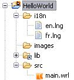

Mobile Widgets offers a mechanism to internationalize your applications.
Internationalization files are store in i18n folder.
By convention, we use <language>.lng code for language files (it is a 2 character long code).
Example: en.lng, fr.lng, ...

Language files contain pairs of <labelId>:<labelValue>.
Example:
Note:
By convention, lines are ordered by label identity.
In main scene file (main.wrl file), we add information about language
files in languages properties of Inline node.
languages property contains an array of language prefix and language files for all supported languages.
use property define the default language (if current language is not supported by widget).
url property define the child scene. This child scene use the language preferences.
Note:
The scene that contains the Inline node with language information will not be internationalized itself. Only children scenes from this scene will be internationalized. That's why Inline node with language information should be the root scene of the project/widget.
In widget, we can use the internationalized label via @[<labelId>:].
<labelId> is the label identity define in language files.
Example, to display the _Message_ label define in language file:
We cannot use directly internationalized label in Javascript code.
To use internationalized label, we define a field in Script node.
Syntax:
Example: